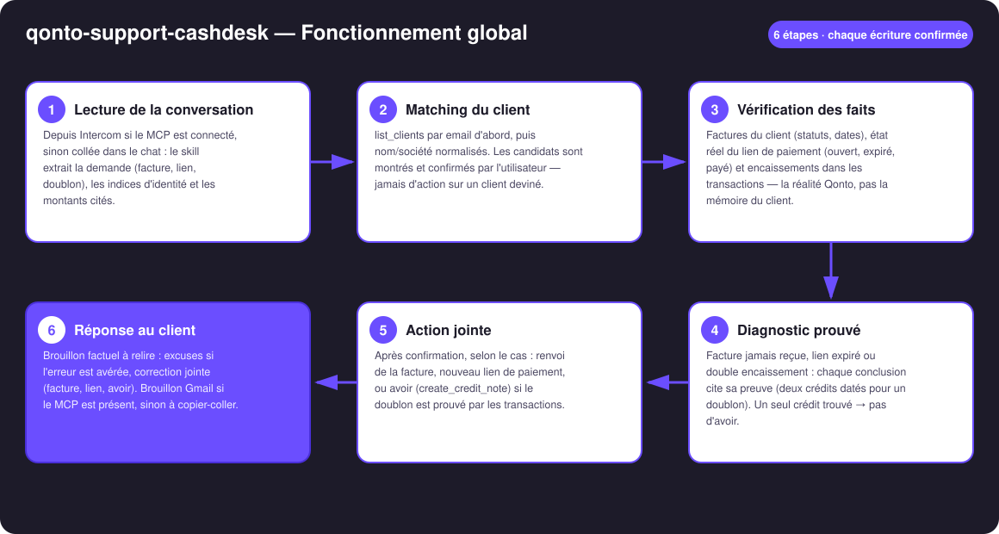
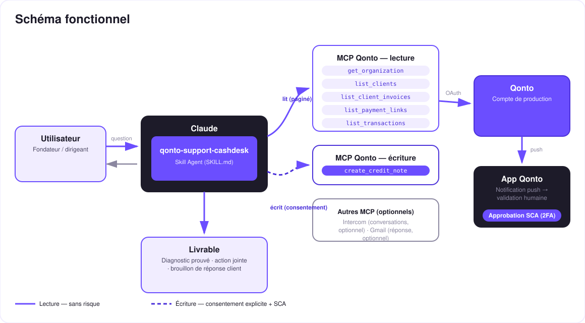

Le guichet facturation du support client — le skill vérifie dans Qonto, prouve, agit et rédige la réponse.
« Je n'ai pas reçu ma facture », « le lien de paiement a expiré », « vous m'avez facturé deux fois » — trois conversations support qui mobilisent le dirigeant alors que la réponse est déjà dans Qonto. Le skill transforme le compte en guichet facturation :
Depuis Intercom si le MCP est connecté, sinon collée dans le chat : demande, indices d'identité et montants cités extraits.
list_clients par email puis nom/société — candidats montrés et confirmés par l'utilisateur avant toute action.
Factures, état réel du lien de paiement, encaissements dans les transactions : chaque conclusion cite sa preuve.
Renvoi de facture, nouveau lien, ou avoir si le doublon est prouvé — plus le brouillon de réponse client à relire.
| Prérequis | Détail | Obligatoire |
|---|---|---|
| Compte Qonto production | Le skill s'adapte à toute organisation — get_organization d'abord, zéro donnée en dur | ✅ |
| Pays | Universel — clients, factures, liens de paiement et transactions existent dans tous les pays Qonto (FR, DE, ES, IT…) ; aucune règle fiscale locale | ℹ️ tous pays |
| MCP Qonto connecté | Connecteur officiel (claude.ai / Claude Desktop), login OAuth | ✅ |
| Module Facturation Qonto | Factures clients et liens de paiement émis via Qonto — sinon rien à vérifier | ✅ |
| MCP Intercom | Lecture directe des conversations support | ⭕ optionnel — sinon conversation collée |
| MCP Gmail | Réponse créée en brouillon (jamais envoyée par le skill) | ⭕ optionnel — sinon texte à copier-coller |

emitted_at, pas settled_at (1-2 j d'écart)
Chaque écriture est confirmée, l'avoir est prouvé : les lectures (traits pleins) sont sans risque ; renvoi, lien et avoir (pointillés) exigent chacun une confirmation explicite. L'avoir est un document comptable réel — proposé uniquement preuve à l'appui (deux crédits datés), jamais en « geste commercial » décidé par le skill. La réponse au client reste un brouillon : c'est l'utilisateur qui envoie. Le remboursement éventuel est un virement fait dans l'app Qonto (SCA) — le skill ne déplace jamais d'argent.
| Le client dit | Le skill vérifie | Issue honnête |
|---|---|---|
| « Je n'ai pas reçu ma facture » | La facture existe ? Statut ? Email destinataire correct sur la fiche client ? | Facture trouvée → renvoi proposé (send_client_invoice, email corrigé avant si besoin) · pas de facture → rien à renvoyer, dit tel quel |
| « Le lien de paiement a expiré » | Statut réel du lien (get_payment_link) : ouvert, expiré, payé | Expiré → nouveau lien proposé (create_payment_link) · déjà payé → signalé, pas de nouveau lien |
| « Vous m'avez facturé deux fois » | Deux crédits pour la même facture : même montant, dates proches — les deux cités date + montant | Doublon prouvé → avoir proposé (create_credit_note) · un seul crédit → pas d'avoir, rapport de ce qui a été trouvé |
Exemple (inventé) : facture INV-2026-042 de 480 €, deux crédits de 480 € encaissés à un jour d'écart → doublon prouvé, avoir de 480 € proposé avec les deux dates citées dans la réponse. Les doublons côté achats (un fournisseur vous a prélevé deux fois) sont le territoire de qonto-supplier-detective ; les liens de paiement proactifs, celui de qonto-pay-me-now.
| Sortie | Format | Quand |
|---|---|---|
| Réponse dans la conversation | Diagnostic + preuve citée + tableau récap (demande → preuve → action → statut) | Toujours — c'est la base |
| Brouillon de réponse client | Texte prêt à relire ; brouillon Gmail si le MCP est présent (jamais envoyé par le skill) | À chaque conversation traitée |
| Documents Qonto | Facture renvoyée · lien de paiement · avoir (document comptable numéroté) | Selon le cas, après confirmation |
La démo ≤ 3 min jointe à la PR suit le storyboard : les trois messages support → matching confirmé → la preuve du doublon dans les transactions, puis l'avoir et la réponse d'excuse en une passe → les deux autres guichets en accéléré. Toutes les données de la démo sont inventées. Le script détaillé de tournage est conservé en interne (hors dépôt).
| Idée | Effort | Note |
|---|---|---|
| Détection proactive des doublons d'encaissement (scan périodique) | Moyen | Le pendant ventes de qonto-supplier-detective |
| Historique des litiges par client (récidives, délais moyens) | Faible | Réutilise le matching client |
| Réponse dans la langue du client (détectée dans la conversation) | Faible | Qonto est paneuropéen |
| Remboursement guidé : préparation de la demande de virement (SCA dans l'app) | Moyen | Même modèle de sécurité que qonto-tax-pilot |